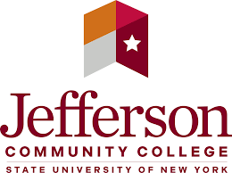
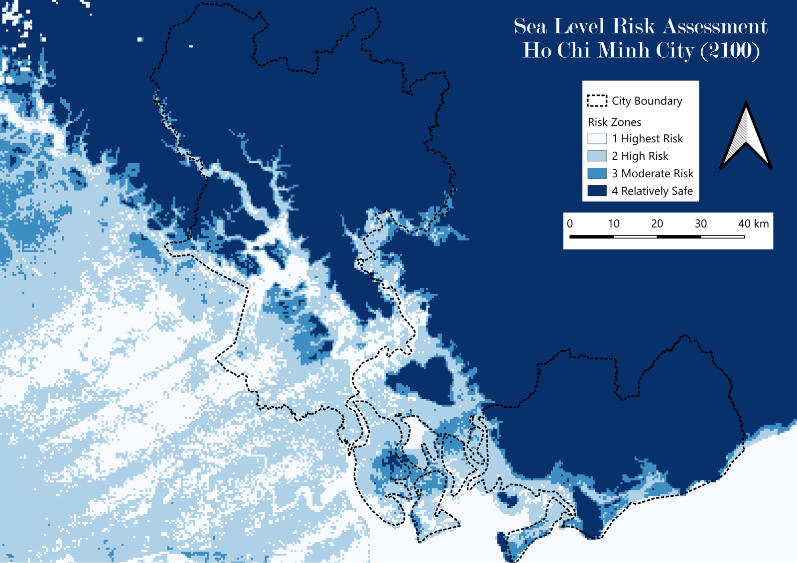
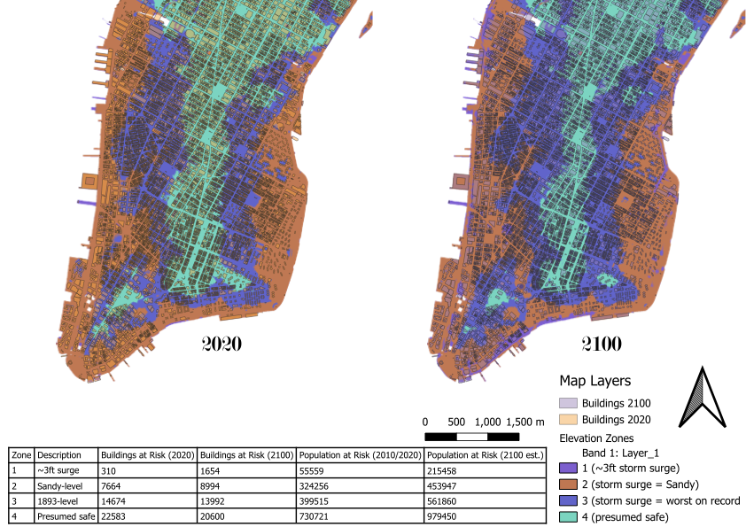
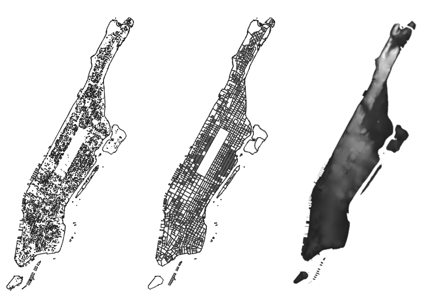
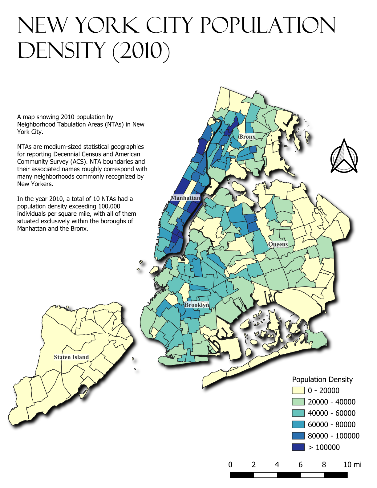

Data Analyst | Policy Professional
Rangel Fellow and Johns Hopkins SAIS graduate student with expertise in international economics, data analytics, and diplomatic engagement. Fulbright alumnus with experience across Central Asia, Capitol Hill, and U.S. embassies. Fluent in Russian and Spanish.
About
Abdul Sanderson is a Charles B. Rangel International Affairs Fellow pursuing a Master of Arts in International Relations at the Johns Hopkins School of Advanced International Studies (SAIS), focusing on International Economics and Finance with a regional concentration on the Americas and Europe & Eurasia. He holds a B.A. in Economics and International Relations from SUNY Geneseo, graduating cum laude.
His career spans economic analysis, diplomacy, and education; from drafting policy memos at the U.S. Embassy in Ashgabat, Turkmenistan, to serving as a Fulbright English Teaching Assistant in Kyrgyzstan, to conducting regulatory cost analysis at Industrial Economics, Inc. He brings skills in GIS, Tableau, Excel, R, and four languages (English, Russian, Spanish, Kyrgyz) to his work in economic diplomacy and international development.
Education
GPA: 3.59 · Focus: International Economics & Finance · Americas & Europe & Eurasia
Coursework
GPA: 3.56 · Dean's List · Sigma Iota Rho Honor Society · Study Abroad: Université de Fribourg
Coursework

GPA: 4.0 · President's List · Phi Theta Kappa (Chapter President)
Coursework
Languages
English
Native
Russian
Intermediate-High
Spanish
Intermediate
Kyrgyz
Novice
Experience
Johns Hopkins SAIS · Jan 2026 – May 2026
Developed evidence-based policy recommendations for soft infrastructure modernization in Central Asia and the South Caucasus as part of a World Bank–SAIS program. Analyzed trade facilitation frameworks across seven countries to identify opportunities for harmonizing customs procedures and regional standards, synthesizing country-specific export potential assessments using composite trade metrics to inform prioritization of development interventions. Delivered findings in presentations and analytical workbooks for stakeholder review.
U.S. Embassy Ashgabat, U.S. Department of State · Jun 2025 – Aug 2025
Drafted policy memos, analytical reports, and a comprehensive country assessment for a Deputy Assistant Secretary. Reported on economic issues including investment conditions and regional trends affecting U.S. interests.
Johns Hopkins SAIS · 2024 – 2026
Charles B. Rangel International Affairs Fellow. Pursuing an M.A. in International Relations with a focus on International Economics & Finance. Coursework includes sanctions, risk analysis, and statistics for data analysis.
U.S. House of Representatives · May 2024 – Aug 2024
Coordinated with 50 congressional offices to secure bill cosponsors. Composed 45 position letters addressing constituents' key issues.
Fulbright Kyrgyzstan · Sep 2023 – May 2024
Taught English classes and conversation clubs at a university in Naryn. Served as a U.S. citizen diplomat through cultural and educational engagement across Kyrgyzstan.
Industrial Economics, Inc. · Sep 2022 – Aug 2023
Compiled data and developed methodologies for regulatory cost analysis. Delivered 13 research products for federal, state, NGO, and IGO clients.
Portfolio

GISGeospatial risk analysis of sea level rise impact on Ho Chi Minh City using DEM data and population projections.
View Project →
GISComparative spatial analysis of census demographics and building infrastructure between 2020 and 2100.
View Project →
GISGeospatial database analysis of Manhattan building footprints and boundaries using QGIS.
View Project →
GISChoropleth map of 2010 Census population density across NYC's Neighborhood Tabulation Areas, revealing sharp borough-level contrasts.
View Project →Certifications
U.S. Department of State · 2023
U.S. Department of State · 2023–2024
U.S. Department of State · 2021–2022
SUNY Geneseo
SUNY Geneseo
SUNY Jefferson Community College